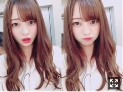
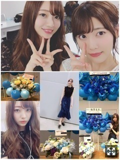
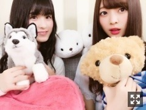
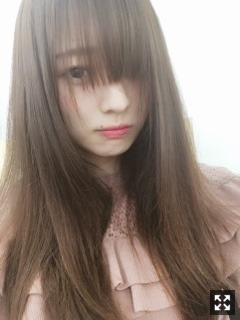
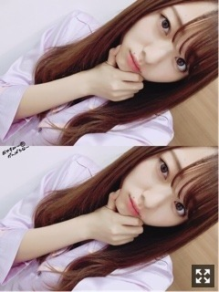

下向きがち。梅澤美波
みなさまこんにちは！！
乃木坂46 ３期生の
梅澤美波です！！
(長かったりします、、ごめんね今日は本当に文字が多いですごめんねでも読んでね

音符ちゃんヘア(見えない
なんかこの髪型好きだからまた握手会でやろーっと
まーた髪の毛明るくなってきちゃった
いっそのこと黒髪しようかな(大嘘
最近は一人も好きで
一人で歩いたりよくしてます
夜が好きすぎるんです、
正反対、気分屋だ〜（笑）
最近はね〜
与田の部屋で
みづきりりあれのかえで与田みなみ
で座談会開いたりとか〜( ¨̮ )
深く話せる仲間がいるっていいね☺︎
めちゃくちゃ楽しかったの〜
あとは
あやと焼肉行ったり〜☺︎☺︎タンがさいっこうでした( .. )
久しぶりに２人でお出かけしたんだけど
やっぱりすきってなった( .. )
ほんで
たまみかえではづきとフレンチトーストたべに行ったりもしましたよ〜
お休みの日があれば必ず外に出ます最近の私は☺︎１人でも外出ます〜
お洋服探しに家を出ても買う服が全部黒\( ö )/
夏だからもっと挑戦します〜
でも黒が落ち着くんだよね〜全身黒星人
家にいると寂しくなっちゃってダメね〜
握手会ありがとうございました！！

見にくくてごめんね〜
握手会のとき☺︎
じゅんなさん(；＿；)♡
じゅんなさんと写真載せて！
ってたくさんの方に言われたの、
声かけようかな〜って考えてたらじゅんなさんから来てくださいました(；＿；)
本当にだいすきじゅんなさん
乃木坂入る前はレーンに並んだこともあったんだよ〜☺︎いつもすごく優しいの。
私服はね〜
１部 下の写真の真ん中上のショット(ぶれぶれのやつ
Tops:ZARA
Skirt: Mila Owen
スカートめちゃお気に入りなの( .. )♡
形がめちゃかわいくない？？(；＿；)
珍しくお母さんと買いに行ったんだ〜☺︎
２部写真撮り忘れちゃったけど
REDYAZELさんのオフショルミニワンピでした☺︎珍しすぎる白でした(見たいって方はれなさんの755へGO！（笑）
５部 左下の写真
Tops:EMODA
Pants:EVRIS
お花と写ってるやつです〜
パンツの形が綺麗すぎてめちゃくちゃお気に入り☺︎気づいた方何人かいらっしゃったけどサイドにスリット入っててかわいいの( .. )♡
素敵なお花もたくさんありがとうございました。
個別握手会でも全国握手会でも
レーンにいくといつもあるお花に
癒されてたし、そのお花をバックに
皆様とお話できるのが幸せで仕方なかったよ☺︎☺︎皆様の愛を感じていました。☺︎
17thシングル個別握手会、
これにて終了致しました。
あっとゆう間だったなあ〜
初めての握手会、
有難いことに追加枠含め全枠完売したり
たくさんの方と出逢えた期間だったなあと
終わった今改めて感じています。
本当に握手会が大好きで仕方なかったし、
洋服考えるのも楽しくて待ち遠しかったし
素敵な時間を迎えられたのも皆様のお陰だなあと思ってます。☺︎
今後どうしていきたいか、どこを目指していくのかを話したりとか
素敵なファンの皆様に支えられているなあって毎回しみじみと感じておりました。
熱く想いを語られると涙が出そうになったり
私の前で泣いてくださる方とかがいると
期待に応えられるように頑張らないとなって、
スイッチを入れてくれる存在でした、ありがとう☺︎
これから私のアイドル人生が続く限り
握手会は繰り返していくものだけど
またたくさんの方に出逢えたらいいなあと思うのと同時に
今回のシングルで出逢えた方とまたお会い出来たらいいなあと気持ちでいます。
何度来ても飽きない、
ずっと楽しい握手会にしたいって思う
せっかく会える場所にいるのだから
想いや頑張りを共有したいって思うし
皆様が頑張っていることを応援したり、少しでも近くにいられる存在でいたいなあと。
楽しんでいただけたかな〜( .. )
私のアイドル人生の初期と言われるであろう今、
この初期の握手会から来てくれている方が
何年後かに何人残ってくれてるんだろうな〜って考えたりもします
（笑）
だから魅力をどんどん大きくしていけるように
皆様を飽きさせないように頑張ろう〜（笑）
皆様とたくさんお話できるように
頑張りますね( ¨̮ )
素敵な時間をありがとう！
また逢おうね。☺︎☺︎
あいにきてね
あ、インフルエンサー最後の握手会
25日幕張にて全国握手会があるので
みんな会いにきてよなっ
れなさんの755に私がちょこちょこ登場してるみたいです、嬉しい( .. )
今回のシングルは追加枠が５部にあったので４時間ぐらい空き時間があったの、いつも来てくれるのれなさん☺︎☺︎すき〜だいすきれなさん

梅桃です◎
思い返せばNOGIROOMさん出演時は
全部ももこと同じだったな〜嬉しか〜
私の相棒のくまちゃんです
この子ともいつも一緒でした
質問返し！！
Q.行ってみたい夜景スポットは？
A.工場夜景！！めちゃくちゃ見たくてひとりで計画立ててる！
Q.今年の夏は何がしたい？
A.お祭り行きたい！じゃがバタとシャーピン食べたい！お祭りの雰囲気がすき
Q.みなみんにとって夏といえば？
A.夜の海に行って波の音を聞くことかな〜冬の海もいいけど夏風が気持ちよくてよく行ってたな〜海は入るよりも見る派◎
Q.夜遅い時間にお腹すいたらどうする？
A.食に関しては食べたい時に食べます、わりと、、。私の場合食べることが本当にすきだから、ストレス発散の１つの食を取られたらきっとおかしくなるから我慢はしません☺︎ものにもよるけどね！
Q.中学時代どんな子だった？
A.人と狭く深く関わる人でした☺︎人見知りだし周りの目を伺って過ごすような息苦しい生活をしていた記憶があります、、部活に励んでいたかな！
女の子☺︎☺︎
Q.日焼け止め何使ってる？
A.雪肌精さんのものを使ってます！
顔にも使えるからメイク前に塗るけど、顔はこまめに塗り直したいからメイク後にもできるように、
石澤研究所さんの紫外線予報、メイクを守るUVスプレー
を顔用スプレーとして使ってます( ¨̮ )
日焼け対策がんばろうね( .. )
私達３期生だけで
何万人もの方のいるステージでパフォーマンスさせて頂きます。(もちろん先輩方と一緒にも立ちます。
なにはともあれ、全力で挑みます◎
今まで３期生は、
12人でたくさん色々な経験をさせて頂きました！
そこで培ったものを今こそ出すときだなって。
きっと神宮にいる方全員が
３期生のことを知っているとは思わないし
３期生を受け入れてくださっている方がどれくらいの割合なのか分からないけど
個性が際立つ12人の
誰かが誰かの目にとまれば素敵だなあと感じていますよ〜☺︎
ステージは大きい！
私は背も大きい！人より面積がある！
精一杯のパフォーマンスを心掛けます
誰かひとりでも気になってもらえたらなあって思います。☺︎
きっと見つけやすいと思います、
背が高いのがいたら私です、
私には私がいるべき場所がきっとあるはず
そう信じてがんばります。◎
見つけてね

ぼさ子。（笑）のーせっと
これはたしかアルバムイベントin東京の直前
告知させてください☺︎
７／７ BOMBさん
れのと２人でグラビア撮って頂きました☺︎☺︎
実は長身コンビ２人でグラビアってゆうのが
密かな夢だったりしたから
物凄く嬉しかった、、(；＿；)
それにね〜めちゃくちゃ楽しかったの！
天気もめちゃくちゃ良くて風も最高に気持ちよくて
ずっと楽しい幸せ〜ってなってた( ¨̮ )
スタッフさんも温かくて
終始笑顔が耐えない現場でした☺︎☺︎
絶対見てほしい！！
私達 ならでは のグラビアになってます◎
お楽しみに〜( ¨̮ )( ¨̮ )
早くオフショット載せたい、、楽しみにしててよね〜
それと、高校生クイズに
３期生が応援サポーターとして参加させて頂くことになりました！
私達は近畿会場にお邪魔します☺︎！！
事前番組も見てくださったかな？？(もちろん見たよね？？( .. )
土曜日に放送された事前番組で
高校生クイズの歴史を学んで
この番組に参加できることが本当に心から嬉しい！って思いました！！
精一杯盛り上げていきます！！
よろしくお願い致します☺︎☺︎
そして今夜放送のNOGIBINGO！8
遂に最終回です！！
約３カ月間に渡って放送させていただいてきたけど
もう終わりなんだな〜と思うと悲しくてたまらない。
テレビの与える影響力って物凄く大きくて
私達３期生の事を知ってくれた方も
間違いなくこのNOGIBINGOさんで増えたと思います。
３期生だけで12回分放送させていただけたこと、本当にありがたいです。
毎回収録が楽しくて楽しくて☺︎☺︎
また出られますように( ¨̮ )
最終回、涙あり笑いありだと思うので
絶対見逃しちゃあかんよ〜
あ、ネタバレになっちゃうから深く言えないけど
ありがとうございました！！☺︎安心したよ

パジャマ
握手会でものすごい数のリクエストを頂くツインテール恥ずかしくて勇気でないからまた今度ね、、(焦らす
℃－uteさんの歌とパフォーマンスが
本当に大好きだったなあ、、
映像みて勉強したりもしたなあ
全然実感はないけど、
きっとこれからも聴き続けます、大好きな歌を☺︎☺︎
お見逃しなく
またね〜ばいばい
チャンスがあるなら絶対ものにしたいっておもいます、もしあるならばね
もう自分は自分にしかなれないから
そこで高めていけるようにがんばります
今週も１週間がんばろな〜
週末は握手会、楽しみにしておるよ
Original：https://www.nogizaka46.com/s/n46/diary/detail/39327?ima=0527&cd=MEMBER